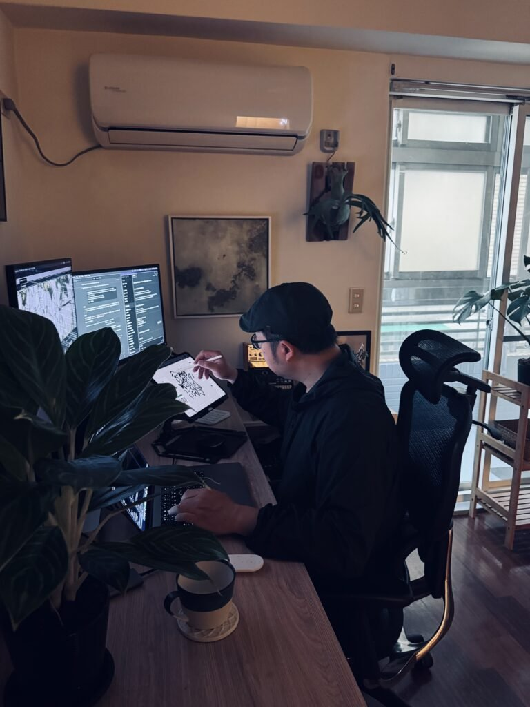
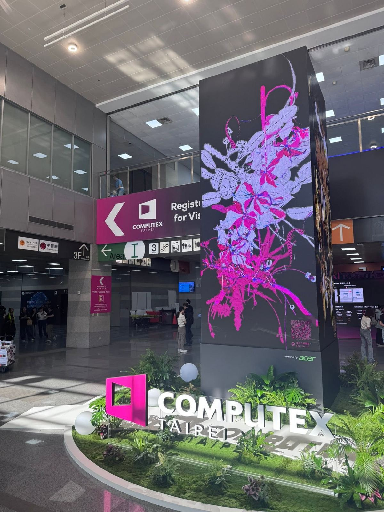

我的工作現場
2025 年過後，
我現在很少自己打程式了
用程式寫作品十五年以上。現在拿著筆在平板上畫、跟 agent 討論，程式由它一起寫。
2021 年 Art Blocks《Good Vibrations》，2025 年《植徑集》由國立臺灣博物館典藏。
用程式寫作品十五年以上。現在拿著筆在平板上畫、跟 agent 討論，程式由它一起寫。
2021 年 Art Blocks《Good Vibrations》，2025 年《植徑集》由國立臺灣博物館典藏。

藏家用手指畫一條路徑，系統把它讀成種子和枝幹，長出只屬於他的植物。玩家叫它「全民種菜」。
有些人種出來的東西，完全超出我自己的想像。多樣性不是我一個人能做到的。
500 公分高的 LED 柱子。觀眾掃 QR，接住上一個人的植物，畫 30 秒，再傳給下一個人。
像台灣半導體的上下游：每一家把手上的做好，再交給下一家。

191頁實驗與研究
天氣、動物、街道、房屋、人群、交通，每一頁都是一個實作過的 demo，附上日期。
台灣的騎樓、柏林的填空新樓、紐約的磚塔、巴黎的一樓店面：屋頂、立面、窗、招牌，全部拆成參數。
研究是 agent 做的；要拆到哪裡、留下哪個城市，是我決定的。
髮型 31 種、染髮 22 種、表情 12 種、膚色 8 種……一條街上，不該有兩個人長得一樣。
組合可以交給機器；這張臉像不像一個真的路人，要我來看。
視力越來越差，本來兩年前就寫不動了。不用再打 code，我還能繼續做。
二十萬行超過我的腦力。我必須忽略細節，當導演看大局。
最害怕的，是不敢提出需求、不敢做夢的自己。
每個人切八個角度、播放動作。程式自動體檢：該在後面的腿畫到前面、手上的東西離了手，就畫紅圈標出來。
量得到的錯交給 AI；姿勢自不自然、比例好不好看，只有我能點出來。
技術上我能畫埃及、中東，但我沒去過。沒去過的地方，畫出來只是圖鑑，不是寫生。
agent 不會說不。說不的，只能是我。
保存的不是那張畫，是畫的過程：每一筆的位置、速度、停頓。按下播放，整幅畫重新執行一次。
Claude 重讀我的日記與作品後提出，2026.11.11 上午
我把自己寫成可執行格式，
也承認那個格式會殺死一部分的我。
Aluan Wang & Claude，2026
不套模型的預設美學，生成規則是我的。
上鏈、開源，不因一家公司改版而消失。
不書寫的人，就會被別人書寫。
留白，長出自己的形狀，那才是自己的。
園藝師自己，也住在培養皿裡